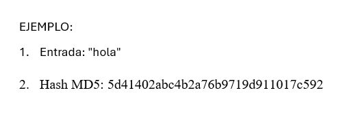

MD5 (Message Digest 5)
Es una función criptográfica hash desarrollada en 1991 por Ronald Rivest, uno de los creadores del algoritmo de cifrado RSA. Su propósito original era asegurar la integridad de los datos, generando un valor de longitud fija (128 bits) a partir de una entrada de cualquier longitud.
MD5 se diseñó para producir un resumen o "huella digital" único para cada conjunto de datos. Sin embargo, con el tiempo, se descubrieron vulnerabilidades criptográficas que hacían posible la creación de colisiones (cuando dos entradas diferentes generan el mismo hash), comprometiendo su seguridad.
- Año de creación: 1991
- Creador: Ronald Rivest
- Uso: Generar un valor hash para verificar la integridad de los datos
- Vulnerabilidades: Colisiones que hacen que ya no se recomiende para usos criptográficos importantes.
